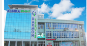

Darmon Servis
360 отзывов 6 врачей
г.Ташкент

- Адрес: ул. Чапаната, дом 18/19, Чиланзарский, Ташкент
- Ориентиры: Чиланзарское РОВД
- Контактные телефоны: +998-71-200-00-17, +998-71-278-17-10, +998-71-278-17-11

/ Новости медицинских центров
акция!/ Новости медицинских центров
/ Новости медицинских центров
Darmon Servis Наш лечебно-диагностический центр - это сочетание высокого профессионализма, современных медицинских технологий, домашнего уюта и тепла человеческих рук. Тот, кто хоть раз побывал у нас, будет лечиться здесь не только потому, что мы предлагаем широк ...
Darmon Servis Наш лечебно-диагностический центр - это сочетание высокого профессионализма, современных медицинских технологий, домашнего уюта и тепла человеческих рук. Тот, кто хоть раз побывал у нас, будет лечиться здесь не только потому, что мы предлагаем широк ...
Darmon Servis Наш лечебно-диагностический центр - это сочетание высокого профессионализма, современных медицинских технологий, домашнего уюта и тепла человеческих рук. Тот, кто хоть раз побывал у нас, будет лечиться здесь не только потому, что мы предлагаем широк ...
Darmon Servis Наш лечебно-диагностический центр - это сочетание высокого профессионализма, современных медицинских технологий, домашнего уюта и тепла человеческих рук. Тот, кто хоть раз побывал у нас, будет лечиться здесь не только потому, что мы предлагаем широк ...